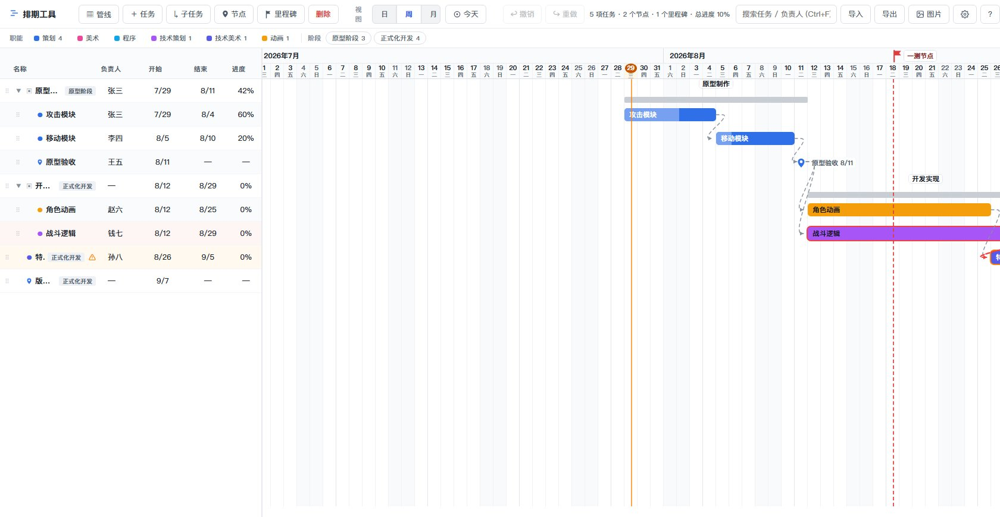

在《归唐》做项目管理实习时，我手上有三条特性管线、几十项任务。表格里任务一平铺，父子关系、依赖和关键节点全都看不见，同步一次排期要配一堆解释。市面上的重型项目管理软件按钮成堆，打开它的成本比排期本身还高。
所以我给自己写了这个工具：打开即用、排期动作零摩擦、导出的图不需要解释就能被同事看懂。它现在是我每天维护管线的主力工具，也进入了主管 PM 的试用。

在《归唐》做项目管理实习时，我手上有三条特性管线、几十项任务。表格里任务一平铺，父子关系、依赖和关键节点全都看不见，同步一次排期要配一堆解释。市面上的重型项目管理软件按钮成堆，打开它的成本比排期本身还高。
所以我给自己写了这个工具：打开即用、排期动作零摩擦、导出的图不需要解释就能被同事看懂。它现在是我每天维护管线的主力工具，也进入了主管 PM 的试用。
核心原则是"能在图上拖的就不进弹窗"：拖任务条平移日期、拖两端改起止、多选整组平移、键盘挪期；父任务起止和进度由子任务自动汇总，不许手改。任务按职能（策划 / 美术 / 程序 / 技术策划 / 技术美术 / 动画）着色，按管线组织顶层结构，按阶段标记进程——色彩只服务于信息：职能归属和状态警示，不为好看上色。
按住 Ctrl 从前置任务拖一条线就建立依赖，添加依赖时会智能推荐"结束时间最接近本任务开始"的候选，并自动排除循环依赖。图上自动计算关键路径（红色描边——这些任务一延期整个项目就延期），开始日期早于前置完成的任务会亮出冲突警告 ⚠。还有一个"流程模式"：把一组子任务收进同一行线性展示，专门表现"步骤 A → 步骤 B → 验收"这类流程。
数据本地 JSON 自动保存、自动备份，一键导出 PNG 用于同步——同事看到的唯一界面就是这张导出图，所以它的清晰度等同于工具本身的质量。整个工具的设计原则写在 PRODUCT.md 里：工具隐形、色彩即信息、直接操纵优先、默认即正确。每个界面元素都要能回答"删掉它会损失什么"，答不上来的就删掉。
这个项目对我最大的意义：把项目管理里"确定性"的方法论——任务拆解、依赖管理、关键路径——做成了自己每天都在用的系统，而不是停留在文档里。